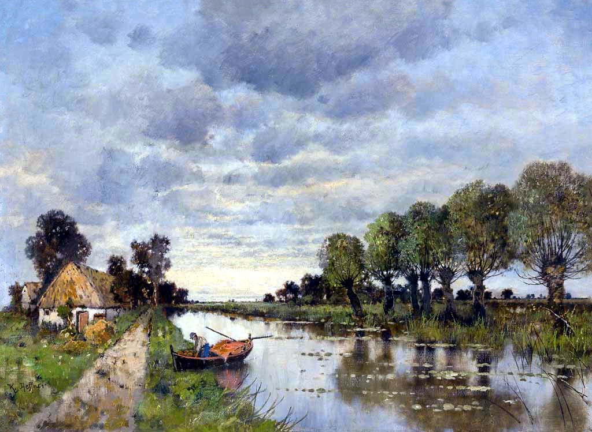
Malerischer Eindruck von der Altmark
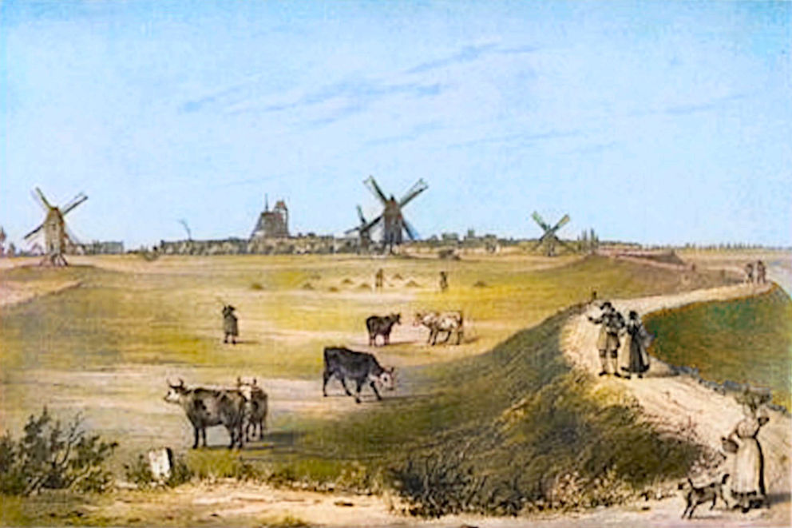
Künstlerischer Eindruck von der Altmark
Die Familie Schlessmann Teil 1
Das Leben in Wendemark und Werben
Werben ist in der Wisch ein Stadt
Die sich am Korn thut mehren.
Die sich am Korn thut mehren.
- Caspar Helmreich, 1665
Alles begann in der Mark Brandenburg. Der erste bekannte Vorfahre der Familie Schlessmann ist Peter Schlessmann, der sich um das Jahr 1635 - also mitten im 30-jährigen Krieg - in der Mark Brandenburg niederliess, genauer gesagt in der Altmärkischen Wische bei Werben an der Elbe. Nur wenige Jahre zuvor, am 7. August 1631, hatte die bekannte "Schlacht bei Werben" stattgefunden. Gustav Adolph von Schweden kämpfte gegen die Kaiserlichen Truppen unter dem berüchtigten Feldherren Tilly, und die Stadt Werben stand im Mittelpunkt des Gefechts. Die Region hatte zu dieser Zeit bereits schwere Schäden durch den Krieg erlitten und viele Einwohner waren geflohen.
Peter Schlessmann wurde etwa um 1610 geboren, aber es ist unklar, woher er kam. Er stammte mit Sicherheit nicht aus Brandenburg, denn der Name war dort gänzlich unbekannt. Es ist sehr wahrscheinlich, dass Peter Soldat in der Armee des Schwedenkönigs war und er aus irgendeinem Grund seine Kompanie verlassen konnte oder musste.
Peter Schlessmann und Anna Meyer
Um das Jahr 1635 heiratete Peter in Werben eine Frau namens Anna Meyer, deren Eltern nicht bekannt sind. Peter hätte sich keinen schwierigeren Zeitpunkt für die Gründung einer Familie aussuchen können. Die kriegerischen Auseinandersetzungen in der Gegend dauerten noch bis 1641. Während dieser Zeit hielt die Flucht der Einwohner vor den Kriegszuständen weiterhin an und gleichzeitig wütete die Pest in Werben und Umgebung, vor allem 1636 und 1637, was die Bevölkerung weiter dezimierte. Viele Dörfer waren fast menschenleer und meisten Bauernhöfe waren verödet. Es dauerte lange, bis die Region sich wirtschaftlich wieder erholte. Trotz dieser wenig erfreulichen Umstände hatte Peter mit seiner Frau Anna im Laufe der Jahre zehn Kinder.Der Einhof in der altmärkischen Wische
Peter wurde der Besitzer eines uralten Gehöftes bei Wendemark, genannt Einhof oder Wendemark I, nur wenige Kilometer von Werben entfernt. Die altmärkische Wische, ein 67 km² großes Gebiet westlich der Elbe, war früher ein Überflutungsgebiet dieses Flusses, das nur im Sommer bewohnt werden konnte. Im Laufe der Zeit wurden Deiche und Entwässerungsgräben angelegt, die der Landschaft bis heute ihr charakteristisches Aussehen geben. Der Boden ist sehr fruchtbar, und vor allem in der Gegend um Wendemark, wo Peter Schlessmann sich ansiedelte, wuchs der allerbeste Weizen und man konnte als Ackersmann zu einem beträchtlichen Wohlstand gelangen.Das Dorf Wendemark war in alten Zeiten das schönste und größte der Wische. Es bestand im Wesentlichen aus einer einzigen Straße. Als Peter seinen Hof erwarb, war die altmärkische Wische sehr dünn besiedelt und die wenigen Gehöfte lagen weit voneinander entfernt. Die Gegend ist vollkommen flach und heute eher monoton, war aber in früheren Zeiten sehr schön. Entlang der Straßen wuchsen riesige Eichen und zwischen den üppigen Weizenfeldern und Kleewiesen waren Hecken als natürliche Begrenzungen. Dazwischen lagen die ausgedehnten Obstgärten der Bauern.
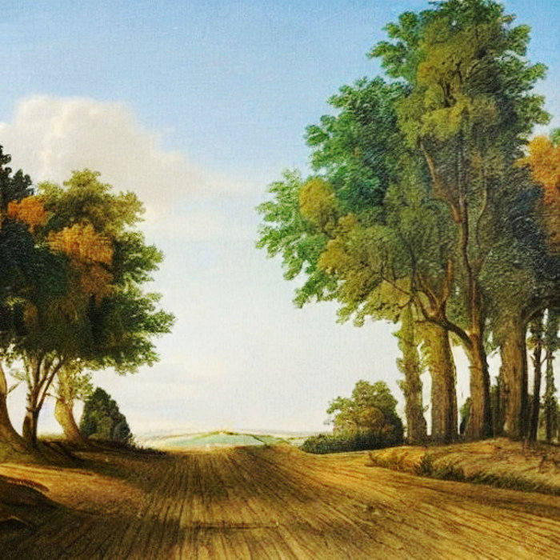
Auf dem Weg nach Wendemark (Eigenes Werk)
Der Einhof, eine ehemalige Niederungsburg, stand ursprünglich ganz alleine. Erst später kamen weitere Höfe hinzu. Als Peter Schlessmann ihn erwarb, war er allerdings noch kein Freihof, sondern ein Lehen. Peter musste seinen Lehnsherren Abgaben zahlen und auch einen Teil des Deichs in Ordnung halten.
Dem Historischen Lexikon für die Altmark ist zu entnehmen, dass der Einhof um das Jahr 1656 ein "Hof mit drei Hufen" war. Eine Hufe ist ein altes Flächenmaß von etwa 20 Hektar. Von einer Hufe konnte eine Familie gut lebten, mit drei war der Besitzer wohlhabend. Allerdings konnte Peter den Hof nicht alleine bewirtschaften. Ein "Dreihufer" benötigte mindestens drei Knechte, drei Mägde, Hirten für die Kühe, etliche weitere Helfer und während der Erntezeit viele Tagelöhner. Man muss also davon ausgehen, dass auf dem Einhof mindestens 20 Menschen lebten. Im Jahre 1660 verpachtete die Stadt Werben ein zusätzliches Stück Land an Peter, der seinen Weizen vorwiegend nach Hamburg verschiffte.
In seiner kurzen Familiengeschichte, die auf den Aufzeichnungen seines Großcousins Christian basiert, gibt Johannes Friedrich Schlessmann (1904-1983) eine Beschreibung, die wahrscheinlich aus dem Jahre 1935 stammt:
Vom Bahnhof in Werben führt ein Weg zum "Einhof", der heute noch erhalten ist, an einer Windmühle geht's vorbei, an Häusern mit Storchennestern auf den Dächern, über eine Landstraße, die mit Rosenhecken und blühendem Hollunder eingesäumt ist, Lerchen singen, Feldhühner schwirren auf und ein Hase hoppelt über den Weg. Flach ist das ganze Land, von tiefen Entwässerungsgräben durchzogen. Hie und da sieht man Inseln von Pappelbäumen. überall prachtvolle Wiesen und Felder, wohin man auch blickt. Dann tauchen drei große Höfe auf. Der mittlere Hof ist der Einhof. Links davon liegt der Druidenhof, rechts der Engelshof. Durch ein breites eisernes Tor betritt man den Einhof, der kastellartig mit hohen Mauern umgeben ist. Die Stallungen und Scheunen sind im Viereck angeordnet. Das Herrenhaus ist einstöckig.
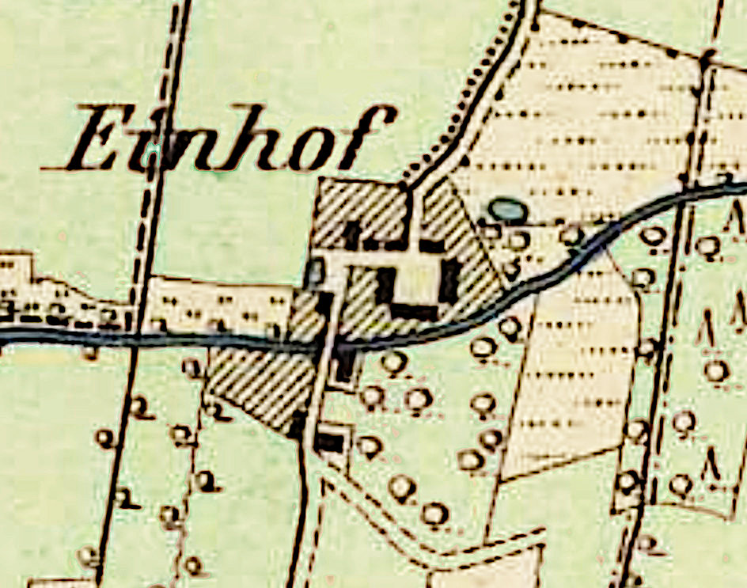
Der Einhof in Wendemark
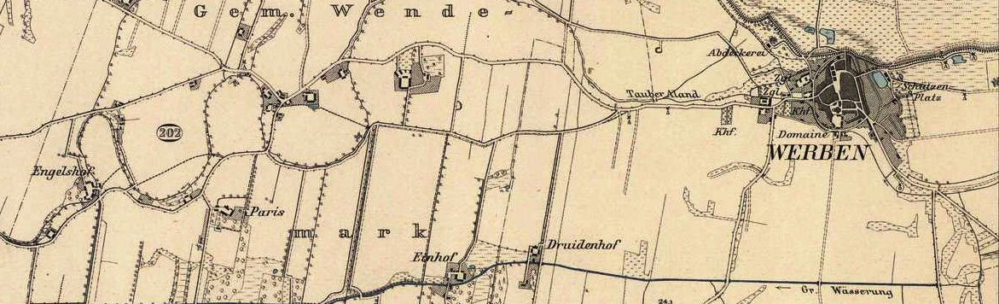
Gemeinde Wendemark, Engelshof links, Einhof unten Mitte, Werben rechts
» Peter Schlessmann (1610–1680)
heiratete Anna Meyers (1613–1671) in Werben 1635
heiratete Anna Meyers (1613–1671) in Werben 1635
und sie hatten die folgenden Kinder:
| Peter Schlessmann | Lebensdaten | unbekannt | ||
| Mette Schlessmann | Lebensdaten | unbekannt | ||
| Breke Schlessmann | Lebensdaten | unbekannt | ||
| Adelheid Schlessmann | Lebensdaten | unbekannt | ||
| Heinrich Schlessmann | Lebensdaten | unbekannt | ||
| Anna Schlessmann | Lebensdaten | unbekannt | ||
| Elisabeth Schlessmann | geb. 1635 *Wendemark |
†Datum unbekannt |
||
| Markus Schlessmann | geb. 1642 *Wendemark |
†Datum unbekannt |
||
| Jacob Schlessmann I | Datum unbek. – *Wendemark |
11.12.1713 †Werben |
h. Margarete Riepert in Werben, 01.11.1671 | |
| Catharina Schlessmann | geb. 1650 *Wendemark |
†25.10.1702 |
h. Jochim Schröder in Kuhlhausen, 04.07.1671 |
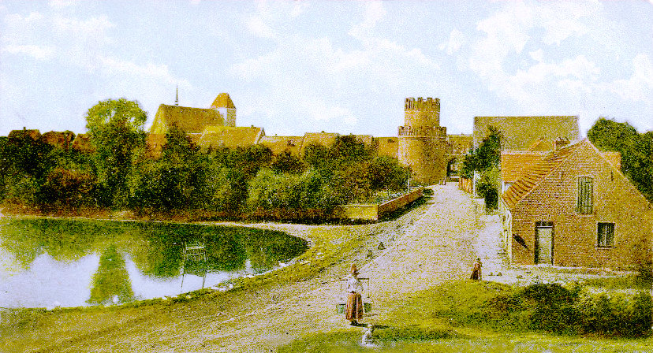
Ansicht von Werben
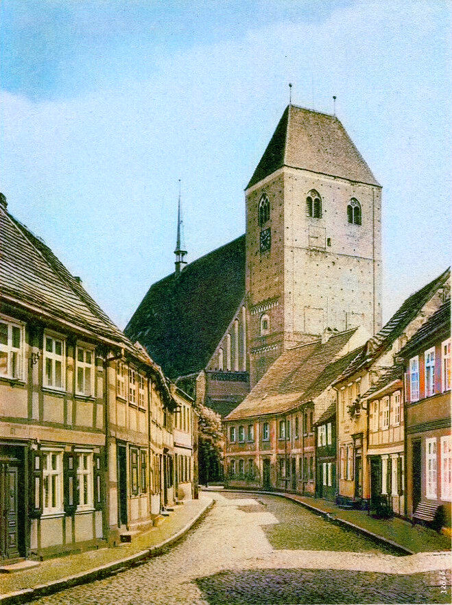
Die zehn Kinder von Peter Schlessmann und seiner Frau Anna wurden in Werben oder Wendemark geboren, aber alle in Werben getauft, denn die alte Kirche von Wendemark war im 30-jährigen Krieg zerstört worden; erst 1663 wurde eine neue Kirche gebaut.
Werben
Peters Ehefrau Anna starb im Jahre 1671 und wurde in Wendemark begraben. Peter zog nach Werben, wo er ein Jahr später seine Haushälterin Dorothea Neumann heiratete. Der Eintrag im Kirchenbuch lautet:
20. November 1672 sind Peter Schlessmann der Ältere von Wendemark und Dorothea Neumann, seine gewesene Dienerin, von mir kopulieret worden.
Daraus lässt sich schliessen, dass zu diesem Zeitpunkt Peter Schlessmann der Jüngere noch am Leben war. Ein paar Jahre später wird im Kirchenbuch vermerkt:
Werben, den 21.Februar anno 1675. Peter Schlessmann der Ältere hat seiner Frauen Stul
in der Kirchen mit 3 Gulden gelöset, welchen er vorhin erblich erkaufet. Aktum u.supra.
in der Kirchen mit 3 Gulden gelöset, welchen er vorhin erblich erkaufet. Aktum u.supra.
Peter Schlessmann starb vermutlich um 1680, denn Dorothea Neumann heiratete nach seinem Tod noch einmal in der Stadtkirche Havelberg:
10.08.1681 Meister Hans Biselstein, Bürger u. Hutmacher allhier mit Dorothea Neumann,
Witwe des Peter Schlessmann, Ackermann Wendemark.
Witwe des Peter Schlessmann, Ackermann Wendemark.
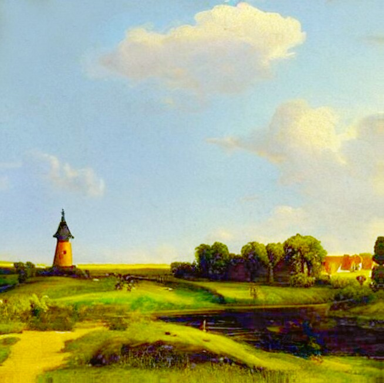
Landschaft bei Wendemark (Eigenes Werk)
Die Kinder von Peter Schlessmann und Anna Meyer
Wie oben erwähnt war die altmärkische Wische - wie die gesamte Altmark - zu Peters Lebzeiten immer noch sehr dünn besiedelt. Der Landesherr versuchte mit allen möglichen Mitteln, neue Einwohner anzulocken, was eine Weile dauerte. Die "Altmärker" entwickelten im Laufe der Zeit ihre eigenen Sitten und Gebräuche. So war es zum Beispiel vor allem bei Gutsbesitzern auf dem Lande üblich, nur Ehepartner zu heiraten, die den gleichen gesellschaftlichen Status hatten. Heiraten mit dem Adel oder den unteren Schichten waren verpönt, und die Eltern steuerten derartigen Verbindungen aktiv entgegen, indem sie Braut oder Bräutigam frühzeitig für ihren Nachwuchs auswählten. Aufgrund der niedrigen Bevölkerungszahlen stand allerdings immer nur eine geringe Anzahl passender Kandidaten zur Verfügung, die vorzugsweise aus benachbarten Höfen gewählt wurden. Daher blieb der jeweilige Hof auch bei einem Besitzerwechsel meistens in der Verwandtschaft. Üblicherweise erbte nur der älteste Sohn das Anwesen und zahlte seine Geschwister aus.Nur von drei der zehn Kinder von Peter Schlessmann wissen wir, dass sie heirateten: Markus, Catharina und Jacob.
» Markus Schlessmann (1642–)
Markus, geboren 1642, übernahm den Einhof. Den Namen seiner Frau kennen wir nicht, aber er hatte mindestens neun Kinder, deren Namen und ungefähre Geburtsdaten registriert sind, aber keine Sterbedaten. Alle Kinder wurden auf dem Einhof geboren und in der Wendemarker Kirche getauft.
hatte die folgenden Kinder in Wendemark:
| Anna Schlessmann | 1667 – | ||
| Heinrich Schlessmann | 1669 – | ||
| Adelheid Schlessmann | 1671 – | ||
| Katharina Schlessmann | 1674 – | ||
| Johann Schlessmann | 1676 – | ||
| Maria Sophia Schlessmann | 1877 – | h. Michael Plötze in Havelberg 18.06.1703 | |
| Anna Dorothea Schlessmann | 1678 – | ||
| Johann Schlessmann | 1686 – | h. Margaretha Elisabeth Schätzer | |
| Anna Magdalena Schlessmann | 1688 – |
In dieser Kirche hängt neben der Kanzel eine Sammlung von Gemälden der Apostel. Eines dieser Gemälde, das Bildnis des Johannes, wurde von Anna Magdalena Schlessmann gestiftet, der 1688 geborenen jüngsten Tochter von Markus. Wahrscheinlich erbte einer der Söhne von Markus den Einhof. Im Jahre 1721 ging der Hof in den Besitz von Nikolaus Falcke über, dessen Sohn in unsere Familie einheiratete.
» Catharina Schlessmann (1650–1702)
heiratete Jochim Schröder (1646–1690) in Kuhlhausen 04.07.1671
Catharina, geboren um 1750, heiratete am 4. Juli 1671 in Kuhlhausen bei Havelberg Jochim Schröder (1646–1690), mit dem sie zwei Söhne hatte, von denen es auch heute noch Nachfahren gibt.
Da der Name Schlessmann in der Altmark nicht bekannt war, hatten die Pfarrer und Registrare ausserhalb von Wendemark und Werben enorme Schwierigkeiten mit der Schreibweise. Catharina wird bei der Heirat "Schlooßmann" genannt (man findet auch Schlesemann oder Schleszmann), aber in ihrem Sterbeeintrag wird der Name korrekt geschrieben.
heiratete Jochim Schröder (1646–1690) in Kuhlhausen 04.07.1671
und sie hatten die folgenden Kinder:
| Jochim Schröder | 29.03.1672 – *Kuhlhausen |
17.05.1713 †Kuhlhausen |
h. Esther Catharina Walßleben in Kuhlhausen 05.02.1696 | |
| Hans Joachim Schröder | 27.04.1676 – *Kuhlhausen |
unbekannt †unbekannt |
Status unbekannt |
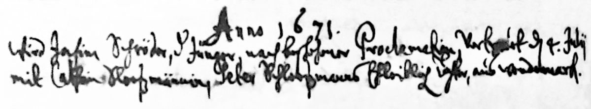
1671 Heirat Catharina Schlessmann und Jochim Schröder
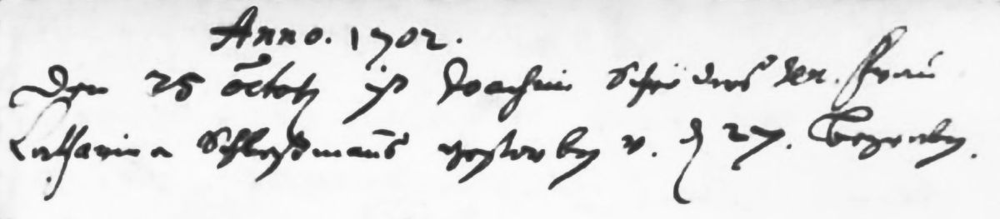
1702 Tod Catharina Schlessmann
Jacob, geboren um 1646, ist unser Vorfahre. Was wir über ihn wissen, folgt im nächsten Abschnitt.
Jacob Schlessmann I und Margarete Riepert
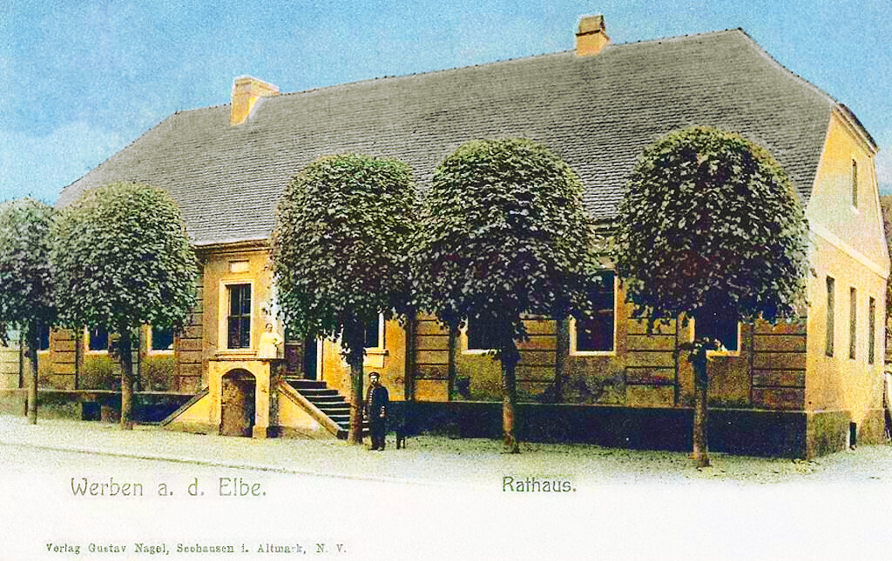
Jacob Schlessmann (um 1646-1713) heiratete am 1. November 1671 Margarete Riepert. Sie war, wie man es gemeinhin ausdrückt, eine "gute Partie". Margarete war die einzige Tochter des Landsassen Heinrich Riepert zu Wendemark, dem Besitzer des Rittergutes Wendemark II, später Engelshof genannt. Von ihrem Vater hatte sie die Hälfte des Gutes geerbt. Die andere Hälfte gehörte ihrem Bruder Heidenreich Riepert.
Das alte Rathaus, Werben
Durch die Verbindung mit seiner Frau Margarete und deren Erbschaften wurde Jacob Schlessmann, der wahrscheinlich schon vor der Ehe gut situiert war (sonst hätte sie ihn nicht geheiratet) ein wohlhabender Mann. 1708 erteilte ihm die Kurmärkische Kammer die Gastwirtschaftsgerechtigkeit und er wurde der Wirt des Ratskellers in Werben. Der Ratskeller befand sich im Untergeschoss des Rathauses und war ein wichtiger Treffpunkt für die Honoratioren der Stadt.
Jacob Schlessmann starb am 11. Dezember 1713 in Werben. Seine Frau Margarete überlebte ihm um sieben Jahre. Sie starb am 18. September 1720. Ihr Sterbeeintrag lautet:
Frau Margarete Riepert, seel. Herrn Jacob Schlessmannes nachgelassene Witwe, starb den 18. September und war den 21. des abends in der Stille in der Kirchen beygesetzet, nachdem sie vorher mit 3 Pulsen mit dem großen Geläute überläutet worden war.
Margarete wurde also in der Kirche begraben, was früher bei angesehenen Bürgern durchaus üblich war. Wie viele Kinder Jacob und Margarete hatten, ist nicht bekannt, denn es gibt nur Informationen zu dem Sohn Jacob. Möglicherweise waren seine Geschwister früh verstorben.
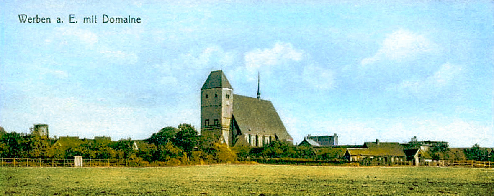
» Jacob Schlessmann I (1646–1713)
heiratete Margarete Riepert (1650–1720) in Werben 01.11.1671
heiratete Margarete Riepert (1650–1720) in Werben 01.11.1671
und sie hatten die folgenden Kinder::
| Jacob Schlessmann II | 1672 – *Werben |
12.03.1737 †Werben |
h. Margarete Müller in Werben 08.11.1711 |
Jacob Schlessmann II und Margarete Müller
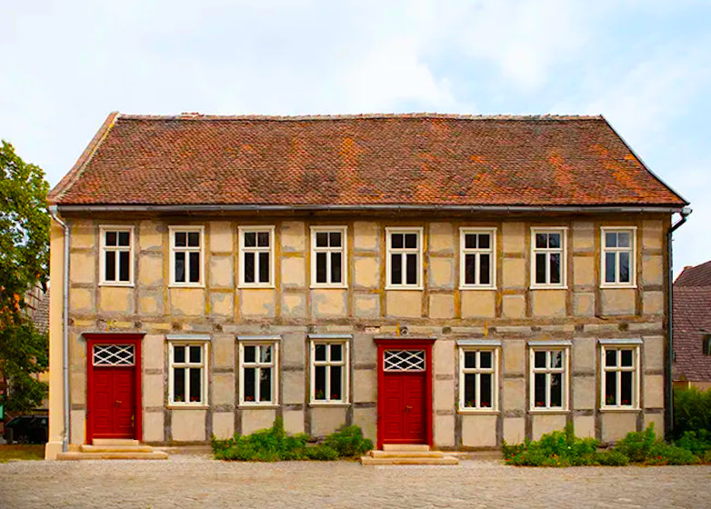
Jacob der Jüngere, der Sohn von Jacob und Margarete, wurde um 1685 geboren. Am 8. November 1711 heiratete er Margarete Müller, die Tochter des Lehrers Georg Christoph Müller in Werben. Ihr Vater war von 1667 bis 1689 Konrektor und später Rektor an der Werbener Schule.
Die alte Schule, Werben
Der 8. November 1711 war nicht nur der Hochzeitstag von Jacob und Margarete, sondern auch der Tag der Uraufführung von Georg Philipp Telemanns Cantata "Gebet dem Kaiser was des Kaisers ist".
Im Heiratseintrag heisst es:
Herr Jacob Schlessmann, Bürger und Kornhändler allhier, Herrn Jacob Schlessmann's Bürgers und Königlichen privilegierten Gastwirts hierselbst ehelichen Sohn und Jungfrau Margarete Müllers, Herrn Georg Christoph Müllers, Rektor der hiesigen Schulen hinterlassene jüngste Tochter, am 23. trin. prima vice, am Tage Catharinen vertrauet.
Es sind nur zwei Kinder von Jacob und Margarete namentlich bekannt: Joachim Heinrich und Johann Christoph, aber es gab definitiv noch mehr, denn es existiert eine Gerichtsakte beim Altmärkischen Obergericht zu Stendal "Jacob Schleszmanns Kinder gegen die von Putlitz in puncto Afterlehen zu Losenrade" aus dem Jahre 1756. Losenrade ist in der Nähe von Seehausen, etwa 25 km von Werben entfernt.
» Jacob Schlessmann II (1672–1737)
heiratete Margarete Müller (1686–1733) in Werben 08.11.1711
Jacob Schlessmann der Jüngere war Bierbrauer, Ratskellerwirt, Kornhändler, Kirchenvorsteher und 3. Lehrer an der Knabenschule. Als Kirchenvorsteher war er für die Rechnungsbücher der Kirche verantwortlich; alle Einnahmen und Ausgaben wurden von ihm aufgezeichnet, "in vorbildlicher Weise und mit schwungvoller Schrift", wie es sein Nachfahre Christian Schlessmann beschrieb.
heiratete Margarete Müller (1686–1733) in Werben 08.11.1711
und sie hatten die folgenden Kinder::
| Joachim Heinrich Schlessmann | geb. 1713 – *Werben |
†Datum unbekannt |
||
| Johann Christoph Schlessmann | 28.11.1721 – *Werben |
†verschollen |
h. Louisa Carolina Kirsch in Neunkirchen 29.09.1757 |
Seine Tätigkeit als Lehrer begann er im Jahre 1736, als er schon über 50 Jahre alt war. Er übte diese Aufgabe allerdings nicht sehr lange aus, denn er starb bereits im folgenden Jahr, sehr zum Bedauern der Schulleitung.
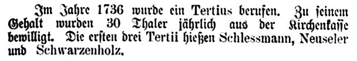
1736 Schlessmann Lehrer an Schule Altmark Jahresberichte Seite 79
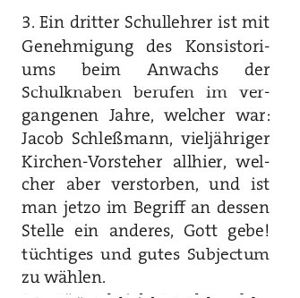
1737 Jacob Schlessmann Lehrer
Jacobs Frau Margarete starb am 26. Mai 1733. Im Kirchenbuch steht:
Frau Margarete Müllerin, Herrn Jacob Schlessmanns, Kirchenvorstehers
und Gastwirts Ehefrau, ward mit großem Geläute in 3 Pulsen
am 3. Pfingst Feiertage des abends in der Stille begraben.
und Gastwirts Ehefrau, ward mit großem Geläute in 3 Pulsen
am 3. Pfingst Feiertage des abends in der Stille begraben.
Jacob Schlessmann überlebte seine Frau nur um fünf Jahre. Er starb am 12. März 1737.
Herr Jacob Schlessmann, vieljähriger Kirchenvorsteher, gewesener Gastwirt
und zuletzt tertius. collega scholae huius, ward den 12. Marty nach vorgängigem
großen Geläute in 3 Pulsen, des abends mit einer parentation begraben.
und zuletzt tertius. collega scholae huius, ward den 12. Marty nach vorgängigem
großen Geläute in 3 Pulsen, des abends mit einer parentation begraben.
Eine Parentation ist eine Leichenpredigt, also eine Trauerrede. Johann Christoph, der 1721 geborene Sohn von Jacob und Margarete, war beim Tod seines Vaters erst 16 Jahre alt. Wir wissen, dass er das Schreinerhandwerk erlernte, aber nicht wann und wo.
Johann Christoph Schlessmann verliess als junger Mann seine brandenburgische Heimat und kam um 1750 nach Neunkirchen im damaligen Fürstentum Nassau-Saarbrücken. Was er dort tat und wie die Geschichte unserer Familie weitergeht steht hier:
» Zu Teil 2 Christoph und Louisa Schlessmann
Teil 1 Peter und Anna Schlessmann
» Teil 2 Christoph und Louisa Schlessmann
» Teil 3 Peter und Philippina Schlessmann
» Teil 4 Karl und Elisabetha Schlessmann
Kontakt
Friederike Schneider (geb. Schlessmann)basehubb@gmail.com